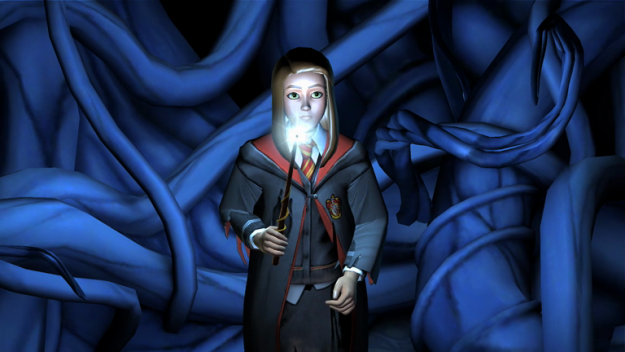

Sevapları Ve Günahlarıyla ÇATIR ÇATIR Anlattık – Yeni HARRY POTTER Oyunu Nasıl?
Türkiye’de resmi olarak 25 Nisan’da çıkan yeni mobil oyun Harry Potter: A Hogwarts Mystery neymiş, ne değilmiş; oynamaya değer miymiş diye hızlıca bir incelemeye aldık sizler için. Evet evet sadece sizler için! Yoksa oyun oynamanın verdiği zevk, heyecan, Harry Potter aleminin bilgileriyle harmanlanmak falan fasa fiso hep… Valla bakın…
Şaka bir yana, mobil oyunlar söz konusu olunca beklenti çok yüksek olmuyor anlayacağınız üzere. Ancak bir telefon oyunundan da beklememiz gereken birçok özelliği bu uygulamalarda aramak bir bakıma her hayranın ilk işi oluyor. Mesela şarj meselesi; mesela depolama alanı problemi; mesela internetten yiyor mu yemiyor mu sorunsalı… Hepsi bir araya gelince zaten kişi hemencecik o oyunu oynamasına gerek var mı yok mu çok rahat karar verebiliyor.
Artıları Neymiş?

Harry Potter: A Hogwarts Mystery’nin şu iki gündür oynadığım kısımları üzerinden konuşacak olursam; sanırım ilk bahsetmem gereken şey grafikler olmalı. Bir mobil oyun için son derece güzel grafikleri var, kabul etmeliyim ki. Öte yandan seslendirmelerin, bizzat Harry Potter kadrosunun oyuncuları tarafından yapılmış olması da fazladan bir artı oluyor oyun adına.
Oyuna başlarken Diagon Yolu’ndan alışveriş yapmak; Hogwarts’ın farklı yerlerinde gezip keşif yapabilme şansımızın olması; RPG formatına uygun olarak soru ve cevap yöntemiyle ilerleyen kurgu; sizi bir sonraki ders için uyanık tutacak meydan okuyan minik sorular… Bunların hepsini birer artı olarak görmek mümkün.
Fazladan spoilerımsı bir artı daha söylemek istiyorum: Oyuna birinci sınıftan başlıyor olduğumuz için, her şey Harry Potter kurgularının ilerleyiş sırasına göre birbirini takip ediyor. Üstelik ilerleyen sınıflarda tanışmak üzere konulmuş Bill Weasley ve Nymphadora Tonks gibi karakterler de, bir sonraki seneleri de görmek adına devam etmemi sağlayan sebeplerden. E sonuçta onlarla aynı dönemde okuyor olmak, Harry Potter’ın daha okula gelmeden önceki dönemlerde Hogwarts’ta bulunmak da ayrı bir zevk canım!
Ders, diyalog ve düello uygulamalarıyla oyunun çok daha yarışmacı ve heyecanlı olduğunu da söyleyeyim. Muhtemelen her oyuncuya verilen geçmiş bilgisi aynıdır; ama sizin seçtiğiniz yollar ile şekillenecek olan Hogwarts yaşamınızda başarı olacağı kadar başarısızlık da mümkün. Ve inanın Snape her zamanki gibi sizin binanızdan puan kırmak için başınızda bitiyor olacak.
Muhtemelen eski Harry Potter oyunlarının nostaljisi, binalar arası çekişmeler, büyü yapma heyecanı, Harry Potter loreuna ait sorular cevaplama isteği derken herkes oyuna öyle ya da böyle ısınacaktır. Pottermore-vari bir tabanı olduğunu da es geçmemek lazım. Ama tabii Pottermore’da oynadığımız bölümlere oranla bu mobil oyun elbette ki çok ama çok daha fazla eksiye sahip ne yazık ki…